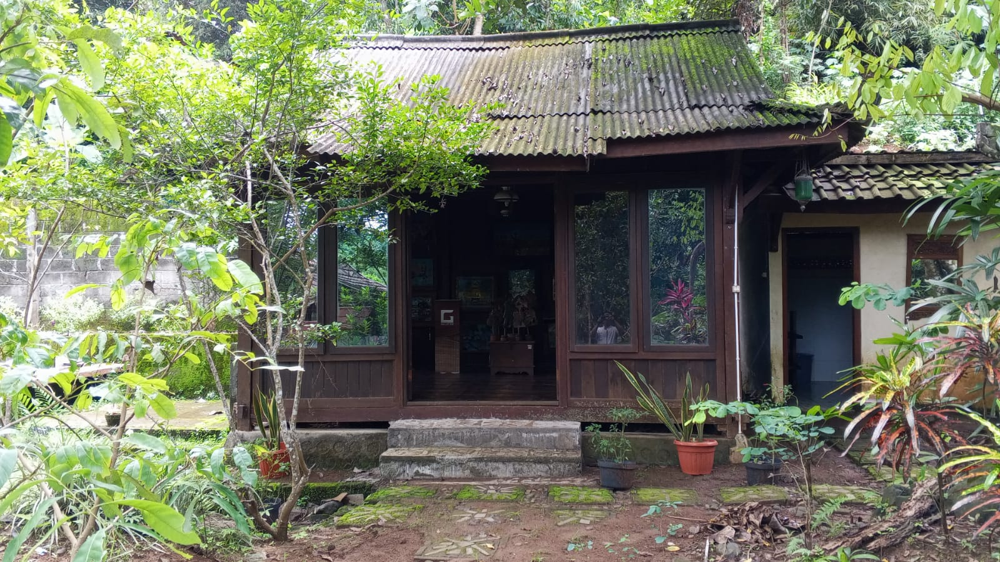

Profil Museum Kayu & Kriya Ambar Polah
Bagi masyarakat Jawa, keragaman seni dekorasi budaya yang menghiasi artefak bermaterial kayu, tidak berhenti sebatas ornament pandang, bernilai keindahan.
Pada beragam benda kayu budaya, seperti halnya koleksi museum kayu dan kriya “AMBAR POLAH”, telah diletakkan berbagai simbol perjalanan hidup manusia yang terukir sangat detail, serta merujuk pada keanekaragaman motif alam.
Pada sejarahnya, seni rakyat atau folk art sebagai dekorasi furniture tradisional Jawa mencapai zaman keemasan sejak abad ke-16 di tangan para pengukir Jawa Tengah, khususnya wilayah Jepara. Sejak era tersebut, kiasan makna spiritual yang mewujudkan benda kayu budaya dapat ditemukan pada setiap hunian beralas kebudayaan Jawa.
Folk art merupakan bagian dari seni kriya dengan estetika bentuk dan ruang yang mencerminkan tradisi serta kepercayaan masyarakat setempat. Pada museum ini sebagian besar artefak dihiasi ukir-ukiran pada sejumlah koleksi artefak yang diwujudkan dalam bentuk, keyakinan yang ditangkap dalam garis, dan pengalaman hidup yang dipadatkan dalam simbol.
Koleksi seni kayu dan estika budaya
Sejak tahun 1955, seni ukir Jepara berkembang pesat berkat semangat pembaharuan R.A. Kartini. Kayu jati, mahoni, dan sonokeling dipilih karena kekuatan serta keindahan seratnya. Motif ukiran Jepara berkembang dari flora dan fauna pedesaan Jawa.

Program Museum
- Workshop Kerajinan Kayu
- Pelatihan Batik
- Pameran Tematik
- Aktivitas Budaya